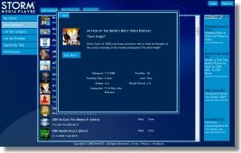

iNetVOD, through its Open Video Platformsm and Storm Media Playertm brand,
has created a extensive video service around a set of open player APIs. The idea of Storm is all about giving more control to
consumers for managing their Internet video consumption, while at the same time allowing Internet-based content
providers to maintain complete control of their offerings.
|
|  |
| Storm Media Player tm |
|